Votre dépôt
Développez vos installations et organisez les manœuvres, l’entretien, le lavage et l’énergie. Tout se prépare avant le départ.
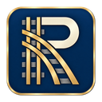
RAILPACT Accès testeurs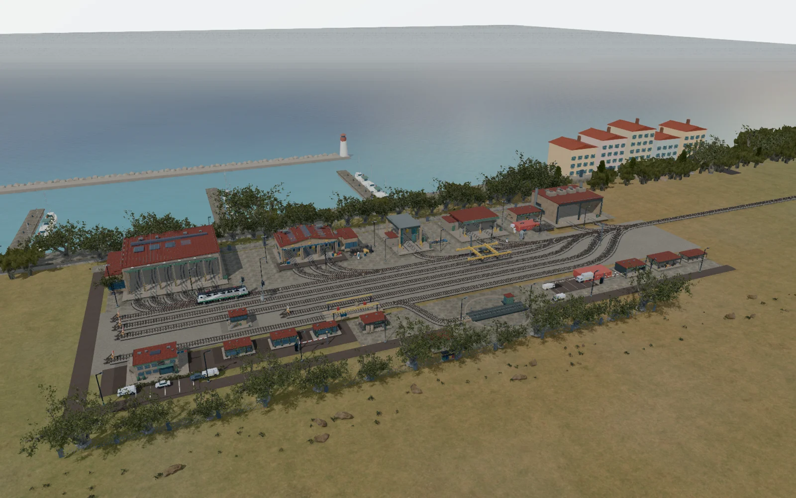
Le jeu de gestion ferroviaire
Une compagnie à créer.
Une histoire à faire rouler.
Acquérez vos premiers trains, formez votre équipe
et donnez à votre dépôt un avenir européen.
01 / Prendre le départ
Un premier engin. Un premier contrat.
Et déjà, des choix qui comptent.
Dans RAILPACT, vous dirigez une compagnie ferroviaire. Préparer le matériel, trouver les bonnes personnes, tenir vos engagements : chaque circulation fait grandir ce que vous construisez.
Développez vos installations et organisez les manœuvres, l’entretien, le lavage et l’énergie. Tout se prépare avant le départ.
Achetez ou louez vos engins, composez vos rames et prenez soin de votre parc. L’état du matériel compte autant que sa capacité.
Recrutez, formez et organisez vos salariés. Compétence, fatigue et bien-être influencent les opérations ; négliger les pauses peut conduire à une grève.
Choisissez vos contrats et fidélisez vos clients. Planifiez les départs, préparez les ressources et arbitrez les incidents : ponctualité et marge se gagnent ensemble.
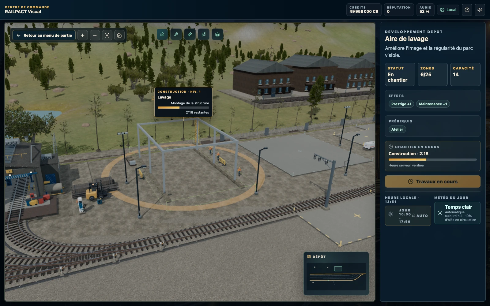
Au quotidien
L’exploitation, au quotidien
Le bon matériel, au bon endroit, avec une équipe disponible. Les contrats ne sont que le début du travail.
Prochaine mise à jour : un atelier remanié avec diagnostic comparatif et essais sur banc à deux réglages, ainsi que des tarifs de formation et d’installations du personnel ajustés. Ces changements ne sont pas encore dans la 0.5.0.
02 / Votre point d’ancrage
Un territoire, une identité et une série spéciale. Découvrez la première locomotive propre à chaque dépôt.
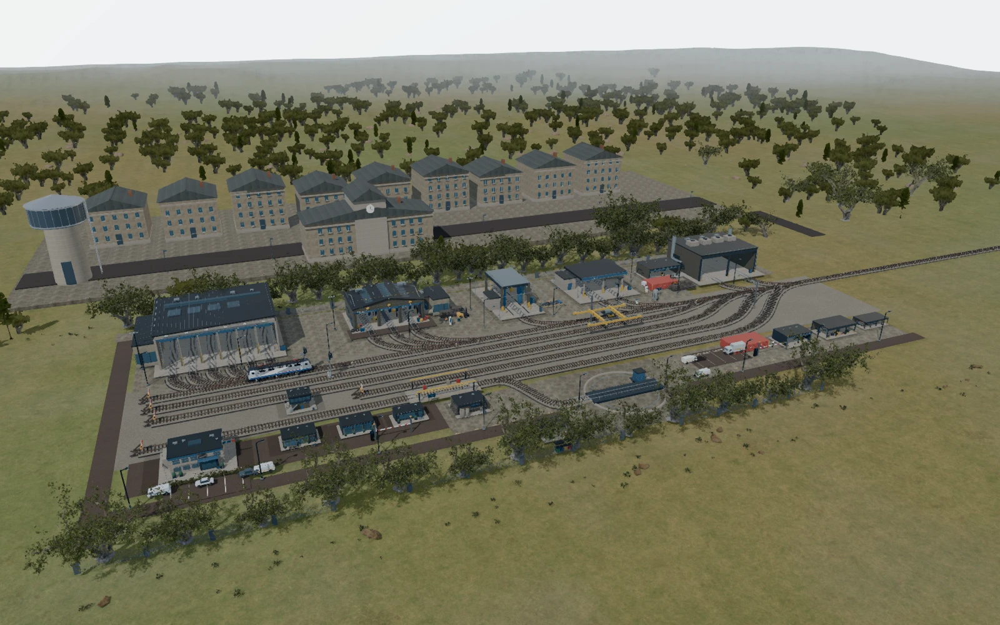
France
Un ancien nœud de correspondance modernisé. Un point de départ polyvalent, entre patrimoine et exploitation quotidienne.
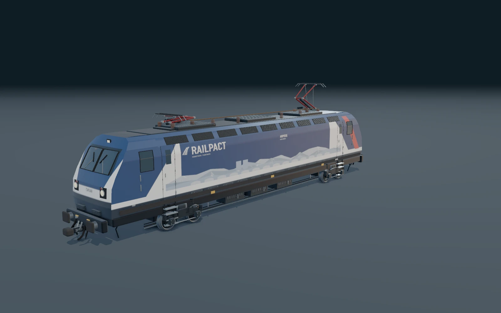
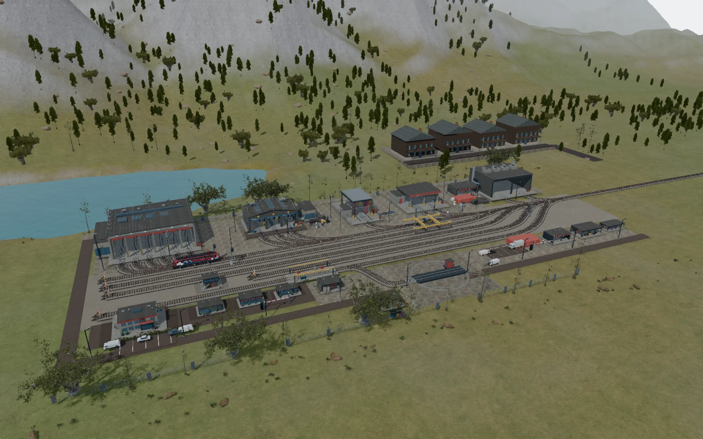
Suisse
Un dépôt compact au pied des reliefs. Ici, chaque voie compte et la régularité construit la réputation de votre compagnie.
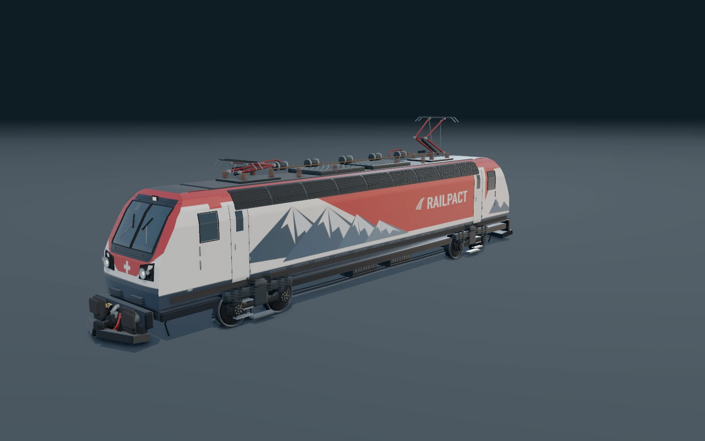
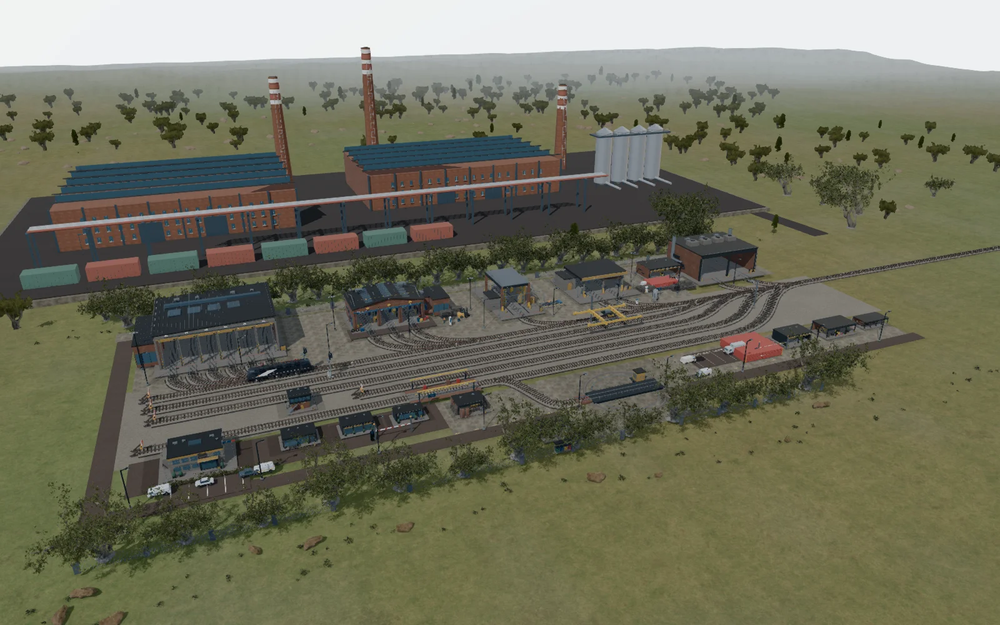
Allemagne
Une implantation industrielle tournée vers le fret. De la puissance, des flux lourds et un parc à faire travailler avec méthode.
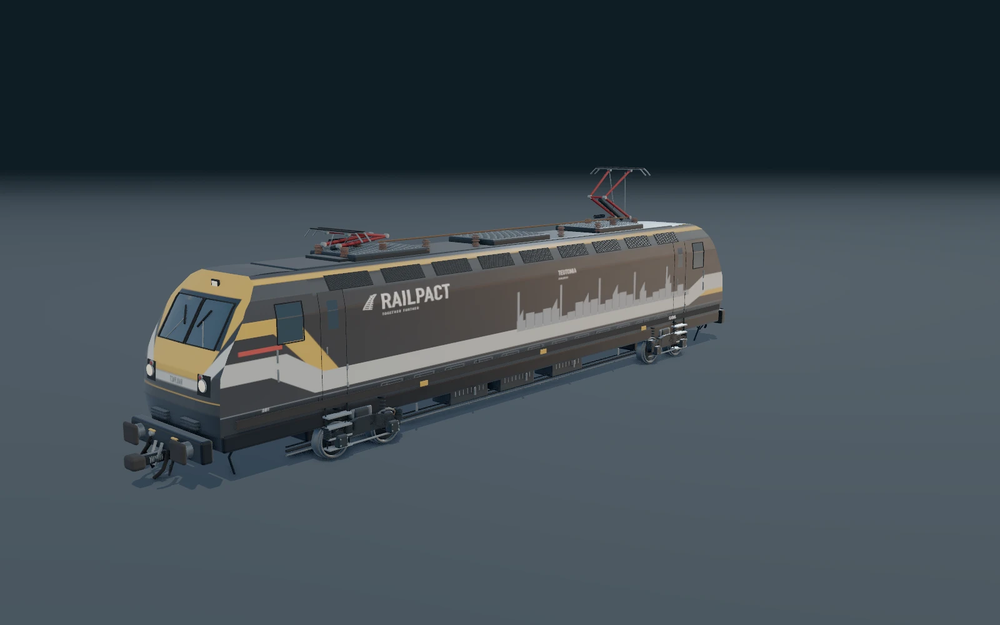
Italie
Entre ville et lignes côtières, un dépôt tourné vers les voyageurs. La souplesse d’exploitation ouvre de nouvelles occasions.
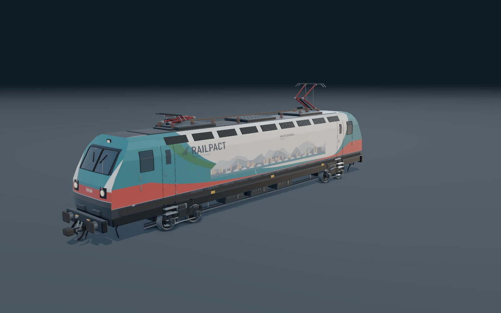
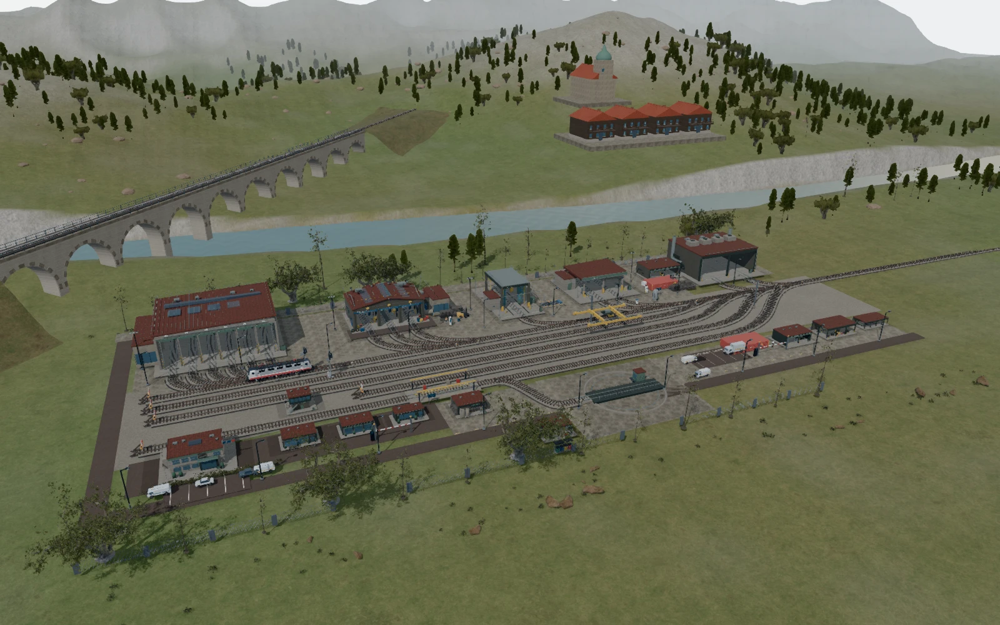
Autriche
Au pied des cols, les dessertes demandent de la constance. Un ancrage montagnard pour une compagnie qui soigne sa régularité.
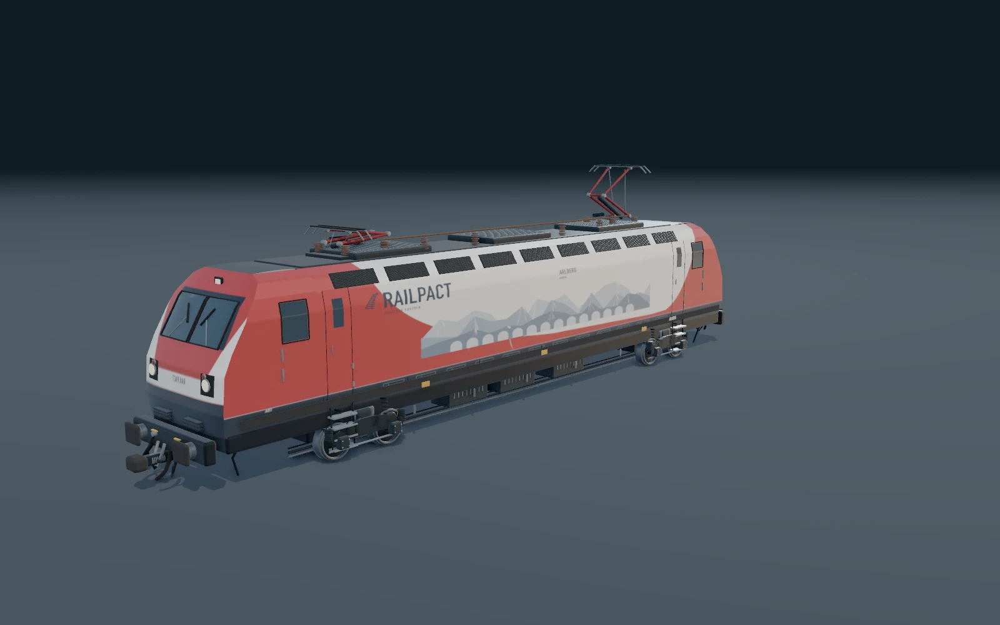
Des séries propres à chaque dépôt, à acquérir en jeu. En développant votre réseau, vous pourrez aussi accéder aux marchés étrangers.
03 / Voir plus loin
18 jalons pour bâtir une compagnie durable.
La progression se gagne sur le terrain : services assurés, équipe formée et comptes à l’équilibre.
Acquérir, recruter, entretenir.
Puis tenir vos premières promesses.
Installer la régularité.
Franchir la première frontière.
Organiser les équipes.
Affirmer une stratégie rentable.
Desservir plusieurs territoires.
Faire vivre un corridor européen.
Le cap à atteindre
Des services ponctuels dans quatre pays, du matériel entretenu, des équipes organisées et une rentabilité solide : voilà ce qui couronne la campagne.
Votre compagnie reste à vous. Poursuivez les contrats, développez le réseau et enrichissez votre collection en jeu libre. Des objectifs de prestige prolongent le défi : fiabilité, présence internationale, excellence technique et santé financière.
Un projet de prestige peut aussi s’ouvrir après la campagne, sous conditions : le Grand Train Européen.
Le goût du matériel
Orion, locomotive électrique polyvalente du catalogue commun, peut rejoindre toutes les compagnies. À vous de choisir les engins et les rames qui feront votre histoire.
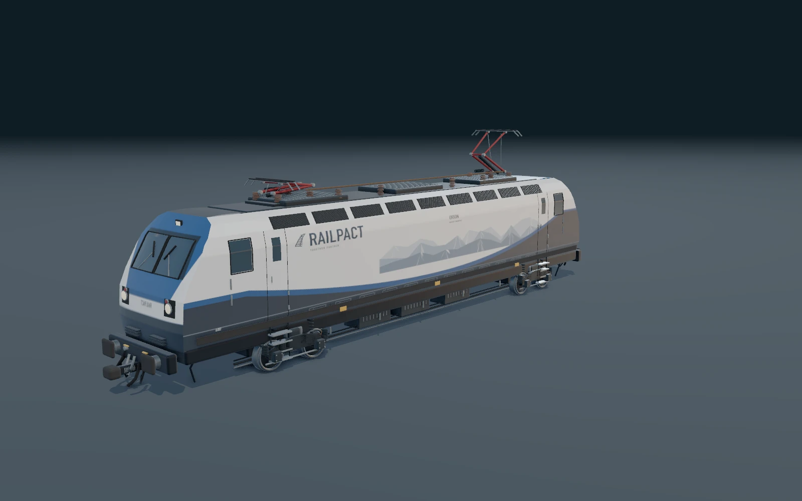
04 / À bord de RAILPACT
Captures de la version Alpha.
Le jeu continue d’évoluer.
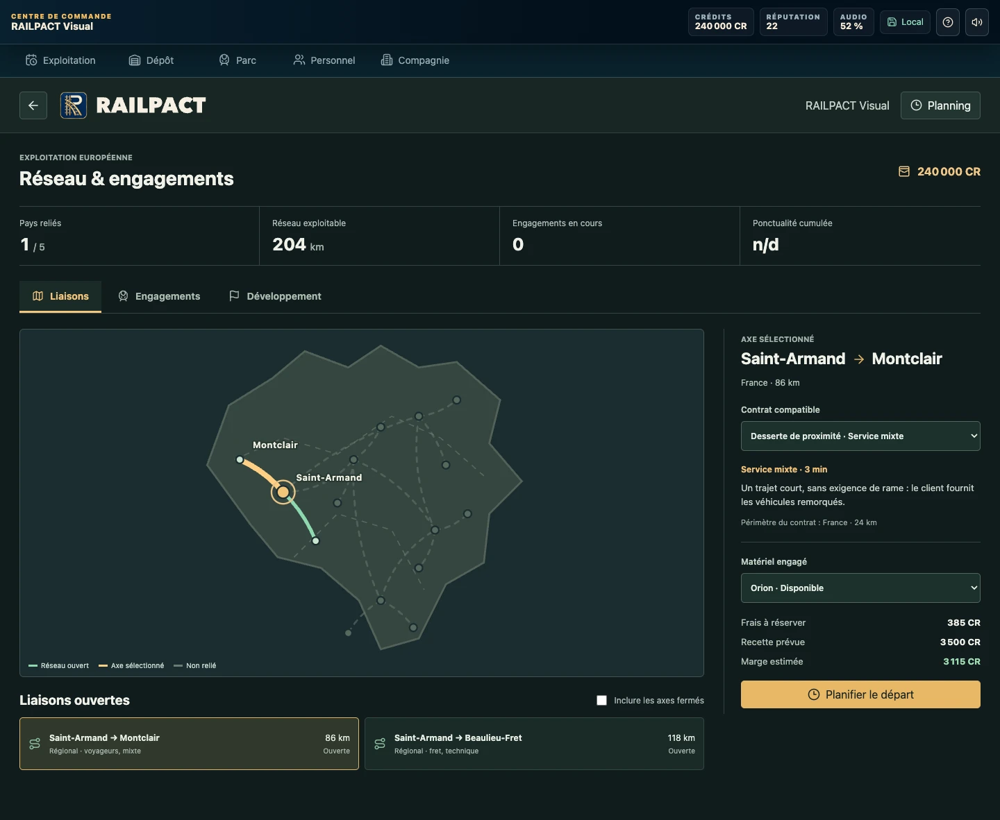
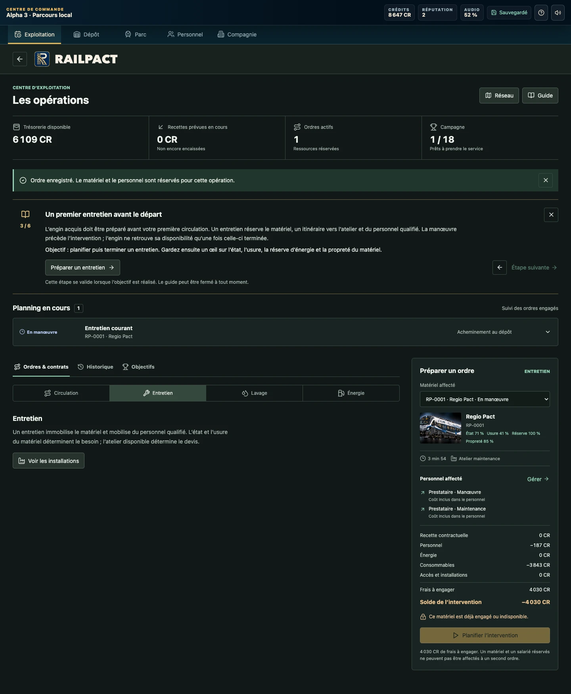
05 / Le plaisir de jouer ensemble
Retrouvez-vous en multijoueur, en local ou à distance. Trois jeux pour se défier, réfléchir et décider ensemble.
Réservez votre wagon, ouvrez les autres. Sécuriser une offre ou tenter votre chance jusqu’au bout ? La décision vous appartient.
Réglez les aiguillages, évitez les voies fermées et trouvez la destination avant la fin du temps. Trois difficultés, de 4 à 16 voies.
Assemblez une rame adaptée à la commande. Capacité, masse, longueur : tout doit tenir, avec le fourgon en queue.
Trois formats de partie
Au-delà du salon
Amis, marché et services en ligne nécessitent une licence active et un profil multijoueur connecté. Les événements dépendent du calendrier annoncé dans le jeu.
Test fermé · Version 0.5.0
RAILPACT est en test fermé sur macOS et Windows. L’accès au jeu est réservé aux personnes invitées. Des bugs et des ajustements sont encore à prévoir ; les testeurs peuvent envoyer leurs retours depuis le jeu.